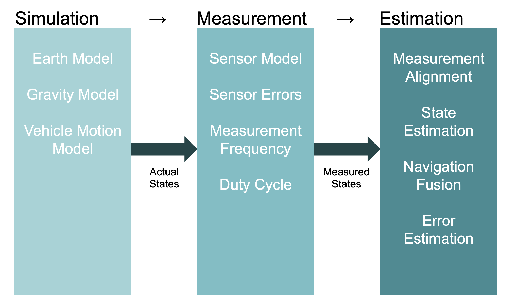

3. Technical Overview
This section discusses the technical aspects of the project; detailing the internal dataflow. This is namely used to describe the key stages during typical execution of the software. Moreover, this section also outlines how the project correctly enforces separations between the simulated “real” world, extracted measurements and the estimated states.
{kind=link}

3.1. Trajectory Generation
Firstly, during a typical run-cycle, the software will firstly calculate the ground truth trajectory. This is performed using a two-step approach. During the first step a trajectory path is constructed to reach the given base points while complying with the selected vehicle model. This is generated at a frequency subject to the vehicles speed. During the next step the trajectory properties are calculated at each step (being the position, velocity, acceleration, attitude and angle rate records). These produced values can then serve as a look-up table with interpolation, using the simulation time in seconds as the key.
3.2. Estimation Initialisation
Secondly, with the ground truth trajectory generated, the initial estimation states can be declared. In the simplest usage these can be read directly from the first record of the ground truth trajectory (at 0 seconds). But realistically, initial estimation errors will be applied on top of these. Other differences, such as expected state errors and a non-identical gravity model (purposely unlike the one used to generate the ground truth) can be set here.
3.3. Sensor Configuration
Thirdly, using the initial estimated states, the sensors and their corresponding fusion methods can now be configured and paired. Individual sensors, such as the accelerometer and gyroscopes, can be configured with custom error profiles, axis orientations and random number generation (used for generating pseudo-random noise and errors). These will then assigned to one or more fusion methods. For instance, the accelerometer and gyroscopes could be be allocated to a configured Kalman Filter for INS fusion. In addition, the same sensors could be shared and also assigned to other fusion methods, such as quantum sensors.
3.4. Simulation Loop
With everything configured, the main simulation loop can now be executed with all over the above. At a minimum, a simulation loop requires a ground truth trajectory, initial estimated state and a series of sensor-fusion pairs. Optionally, a custom clock model can be included to invoke purposeful timing errors. Custom display and result collectors can also be passed to obtain information with configured levels of filtering.
During the first step of the simulation, a scheduler is initialised for handling the sensors and fusion, calling the next due senor or fusion method on time. When a sensor is ready for a measurement, the simulation time is move up to that time, with clock errors applied. The sensor is then given the ground truth record for that time, which is then uses to produce a noisy measurement (which is held/cached internally). When a fusion method is ready, depending on its trigger mode, it collects the noisy measurements from its sensors and processes then before updating the estimated state.
This approach allows sensors and fusion methods to be dynamically included in simulations, while enforcing complete separation between ground truth (solely seen by sensors) and the estimated state (solely updated by fusion methods with noisy measurements).
3.5. Capturing Results
After the simulation loop is complete, the captured results (either from the default or given results collector) will be returned. Results are firstly written to disk using the projects own binary file format (optimised for sequentially reading and writing of records). After this, results will then be exported in any of the requested file formats (such as csv, binary, numpy, MATLAB save) with various levels of compression (both lossly and lossless). Separate files are made for both the ground truth (optional) and estimation state records.
3.6. Displaying Results
If enabled, after results have been written to disk, their data will be displayed in a series of interactive graphs and plots comparing the ground truth and estimation history against time. The supported figure types are as listed:
Summary Table Plot
2D Open Street Map Plot
2D Lat-Lon Plot
3D Lat-Lon-Alt Plot
Position Axes Plot
Velocity Axes Plot
Acceleration Axes Plot
Attitude Axes Plot
Angle Rate Axes Plot
3.7. Recreation
After the simulation, the same results can be recreated by setting the same parameters and random seeds. To aid with this, a complete configuration file containing all parameters used is dumped into the generated results folder.